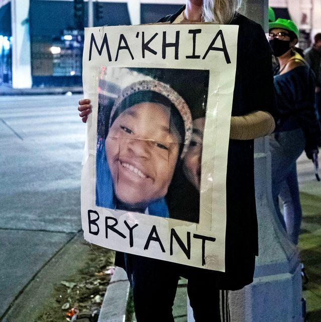
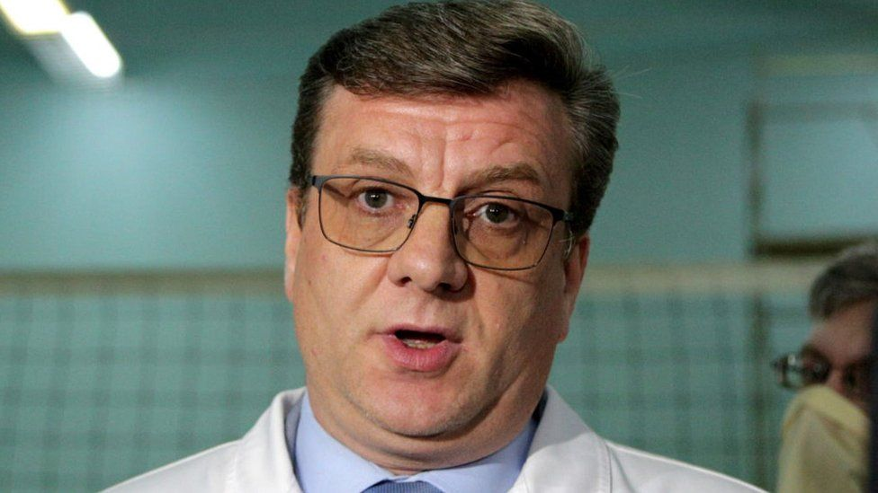

Just minutes before a jury reached a guilty verdict in the trial of former Minneapolis police officer Derek Chauvin on Tuesday, a 16-year-old girl named Ma’Khia Bryant was fatally shot by police in Columbus, OH. In a press conference, officials said they were responding to a 911 call about an attempted stabbing. Columbus police released bodycam footage a few hours after the incident...
Teams using a helicopter and drones spent the weekend searching the swampy area in the Omsk region. Dr Alexander Murakhovsky, 49, disappeared from a hunting base on Friday. But officials say he reached a village...
The alleged killer escaped in a car with others, shooting at police as they went. Photos from the scene show a bullet hole in the windscreen of a police car and another window shot out. Police say that they are looking for one or more suspects. The airport has now reopened...